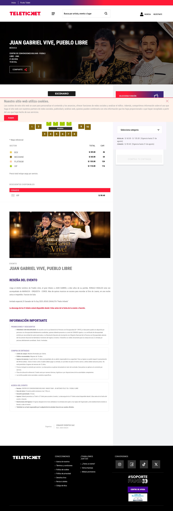
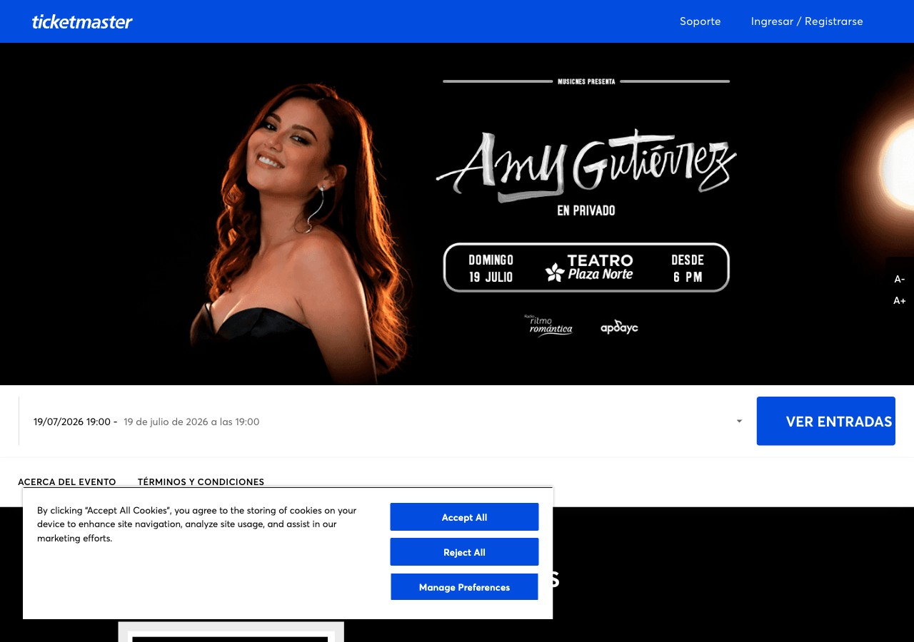
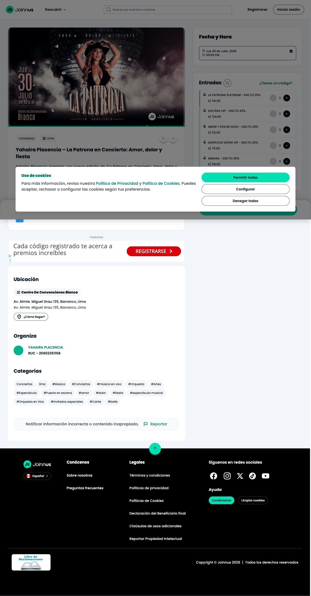
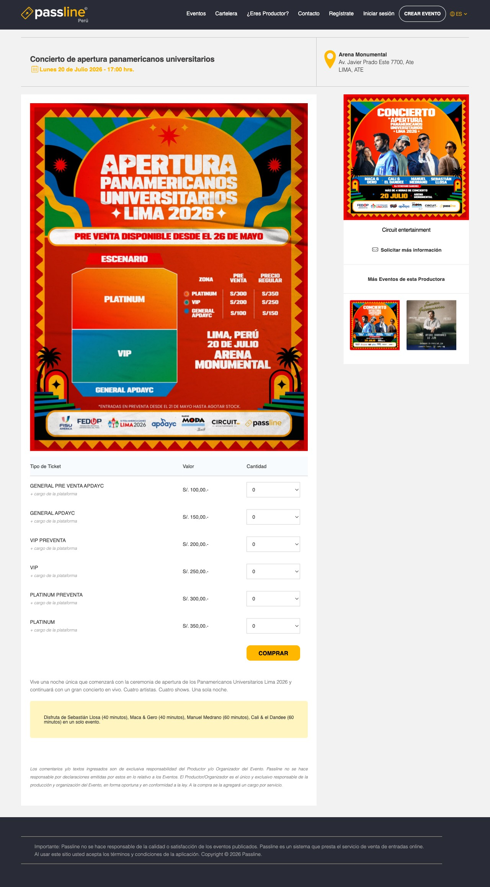
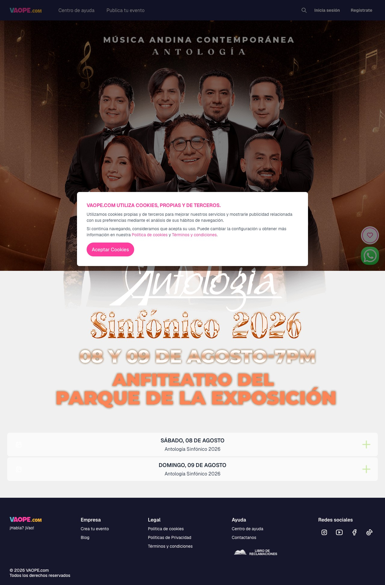
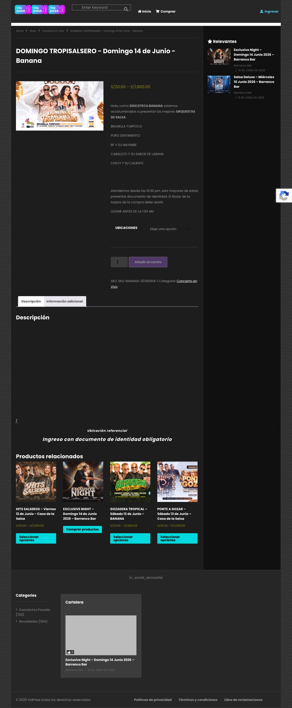
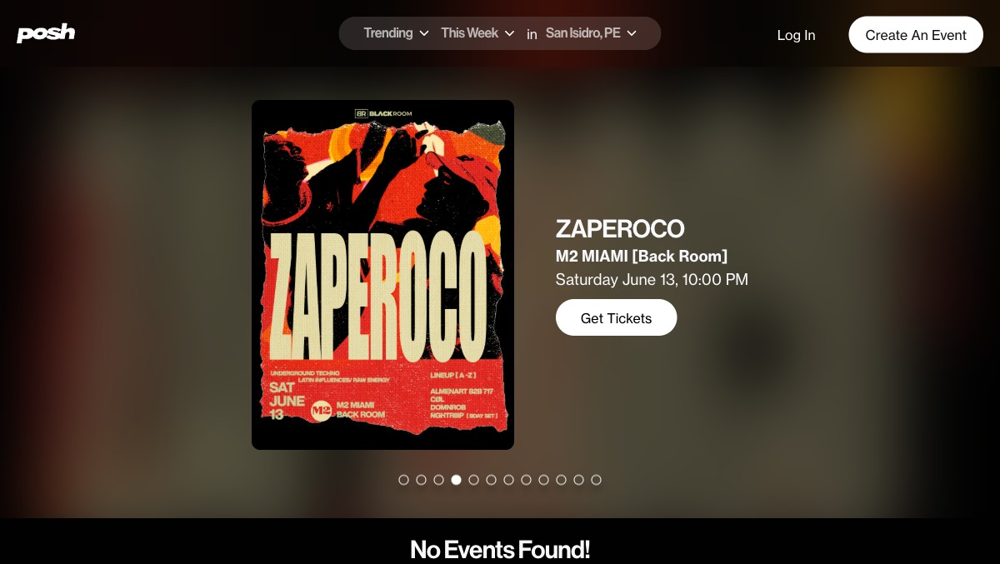

Análisis en vivo (Playwright) de 7 plataformas de venta de entradas — 6 peruanas + referentes EE.UU. — entrando a eventos reales para entender cuál es el estándar y cuál la forma más idónea de manejar la imagen del evento en Pasape.
Hay dos escuelas, no una. El estándar de los líderes peruanos separa dos roles de imagen: un cover (banner del hero) y el flyer (afiche completo con la info). Nadie en Perú usa blur-fill — esa técnica es exclusiva de Posh/DICE en EE.UU., así que para nosotros sería un diferenciador, no una copia.
object-contain). Respeta la info pero se ve más “ficha”. → viapase, passline.object-cover). Impactante, pero exige un banner dedicado. → joinnus, ticketmaster, teleticket, vaope.Qué hace cada plataforma en la página de detalle del evento.
| Plataforma | Hero | Ratio | Ajuste | Blur-fill | Flyer completo | Escuela |
|---|---|---|---|---|---|---|
| viapase | Thumbnail (ficha e-commerce) | natural | contain | — | el mismo, chico | A |
| passline | Flyer grande a la izquierda | natural | contain | — | el mismo, grande | A |
| joinnus ⭐ | Banner split izquierda | 16:9 fijo | cover | — | banner dedicado | B |
| ticketmaster ⭐ | Banner full-bleed | ~21:9 wide | cover | — | reaparece abajo | B |
| teleticket ⭐ | Banner full-bleed + título overlay | ~21:9 wide | cover | — | reaparece abajo | B |
| vaope | Banner full-width | wide | cover | — | partido/crudo | B |
| thenetpass | SPA no renderizó en headless | — | — | — | — | ? |
| Posh / DICE (EE.UU.) | Flyer + fondo difuminado | adaptativo | contain | SÍ | es el hero mismo | ★ |
Captura real del hero + análisis. (Scroll dentro de cada captura para ver la página completa.)

El estándar más pulido de Perú. Hero = banner horizontal full-bleed (edge-to-edge) con el título superpuesto sobre la imagen. El afiche completo del evento reaparece más abajo, en la sección “Evento”.

Máxima producción. Hero = banner full-bleed wide (~21:9), object-cover, diseñado para ese formato (artista a la izquierda, título y fecha a la derecha). El afiche vuelve a aparecer en “Acerca del evento”.

El referente peruano #1. Hero = banner split 16:9 fijo a la izquierda + sidebar de tickets a la derecha. object-cover recorta al banner. Verificado en 2 eventos (concierto + teatro): ratio consistente.

Respeta el afiche: muestra el flyer completo grande a la izquierda (object-contain, vertical, con su mapa de zonas y precios), sin recortar nunca. La otra imagen (cover cuadrado del concierto) aparece como thumbnail secundario en el sidebar.

Hero = banner full-width con object-cover, pero el organizador no subió uno perfectamente apaisado → se nota el recorte y un corte raro entre el hero y el contenido.

Es un WooCommerce: el flyer va como imagen de producto (thumbnail chico ~265px, object-contain) junto a una ficha de e-commerce. Sin hero, sin cover, sin blur-fill.

Otra filosofía: no piden cover. Muestran el flyer con object-contain y rellenan el marco con el propio flyer difuminado (blur-fill) que toma su color. Funciona con cualquier proporción sin recortar y se ve premium.
viapase · passline
joinnus · ticketmaster · teleticket · vaope
Combinar el estándar peruano (Escuela B: cover + flyer separados) con la robustez de Posh/DICE (blur-fill) para cubrir el caso real del ICP, que sube el flyer cuadrado/vertical de Instagram y casi nunca tiene un banner apaisado.
Se muestra siempre completo, nunca recortado en una sección del detalle — como respetan Passline y Joinnus. Es la fuente de la info: zonas, precios, line-up, dirección.
Anti-fricción: en el composer, un cropper sobre el mismo flyer (“elegí cómo se ve en la portada”) genera el banner de una sola subida. Los organizadores pro pueden subir un cover propio.
Banner apaisado object-cover, full-width, impactante.
En vez del recorte feo de Vaope → el flyer con su propio fondo difuminado (Posh/DICE). El hero nunca se ve mal.
Resultado: el estándar peruano que tus organizadores reconocen (cover banner + flyer completo) + la robustez que ninguno tiene (blur-fill que salva el caso del flyer de Instagram) + tu regla de UX: una sola imagen obligatoria y cero estados feos.
r-*.jpeg) · Pasape — diseño de hero del evento.